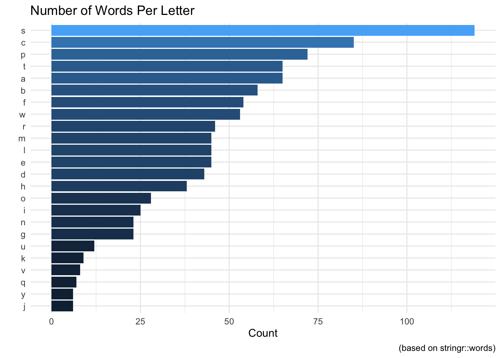
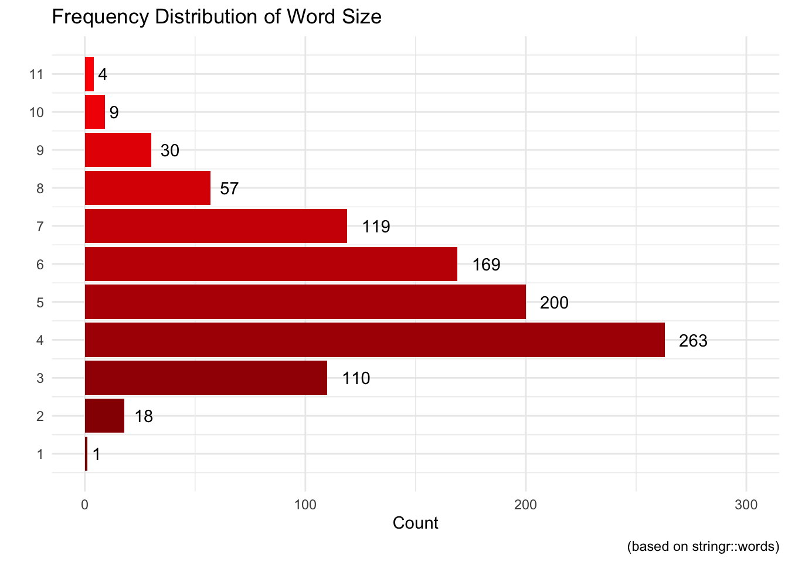

Usingdplyr and the stringr::words package, we can demonstrate how to extract information from a dataset. Before we get into anything, let us take a look at a few of the characteristics of the stringr::words dataset.
library(stringr)library(dplyr)
Attaching package: 'dplyr'
The following objects are masked from 'package:stats':
filter, lag
The following objects are masked from 'package:base':
intersect, setdiff, setequal, union
line words
Min. : 1.0 Length:980
1st Qu.:245.8 Class :character
Median :490.5 Mode :character
Mean :490.5
3rd Qu.:735.2
Max. :980.0
word_tbl %>%# Create a column of the letter the word starts withmutate(sw=str_match_all(words,"^.") |>unlist()) %>%# Group by that new column. Any change we make will be in accordance with this column. group_by(sw) %>%# We will use the tally function to count how many observations fall into each category. tally()
# A tibble: 25 × 2
sw n
<chr> <int>
1 C 2
2 a 65
3 b 58
4 c 83
5 d 43
6 e 45
7 f 54
8 g 23
9 h 38
10 i 25
# ℹ 15 more rows
Taking a look at the table we can see that there are two words that start with a capital C. This doesn’t halt the process, but it is worth it to see who the culprits are.
# A tibble: 2 × 3
line words sw
<int> <chr> <chr>
1 150 Christ C
2 151 Christmas C
For our purposes, it is more than okay to change these entries to be lowercase. Conveniently, the stringr package really does have it all!
words <-str_to_lower(words)word_tbl <-tibble(line=1:length(words),words=words)word_tbl <- word_tbl %>%# Create a column of the letter the word starts withmutate(sw=str_match_all(words,"^.") |>unlist()) %>%# Group by that new column. Any change we make will be in accordance with this column. group_by(sw) %>%# We will use the tally function to count how many observations fall into each category. tally()
We could look at the table and make some observations, but it would be better to just graph everything!
Keep in mind that this list of words is only 980 observations long so there are plenty of missing words. With that being said, what letter is represented the most in the stringr::words vector?
word_tbl %>%ggplot(aes(fct_reorder(sw,n),n,fill=n)) +geom_bar(stat="identity") +coord_flip() +labs(x="",y="Count",title="Number of Words Per Letter",caption="(based on stringr::words)") +theme_minimal() +theme(axis.ticks =element_blank(),legend.position ="none")

For example, here is a quick way to create a vector of words and getting their length:
library(stringr)# Take a sample of 10 observations from the words packagesample_words <-sample(words,10)# Find the length of each wordsample_words |>str_length()
[1] 3 5 8 4 7 5 5 3 6 4
Using this same approach we could find out the number of each letter-sized word in the package.
# X-Axis Values for laterxax <-1:11# Create a dataframe to use words_t <-tibble(line=1:length(words),words=words)# Create a column with the lengths of the wordswords_t <- words_t %>%mutate(string_length=str_length(words)) %>%group_by(string_length) %>%tally()
# Plot the frequencies, flip the coordinates# use our custom axis labels, remove axis ticks, # plot the frequencies on the plot# label the axes words_t %>%ggplot(aes(string_length, n, fill = string_length)) +geom_col() +coord_flip() +labs(x ="Length of Word") +scale_x_continuous(breaks = xax) +theme_minimal() +theme(legend.position ="none",axis.ticks =element_blank()) +scale_fill_gradient(low ="darkred", high ="red1") +geom_text(aes(label = n, hjust =-.5)) +ylim(0, 300) +labs(x ="",y ="Count",title ="Frequency Distribution of Word Size",caption ="(based on stringr::words)" )

stringr::sentences
sentences_t <-tibble(line=1:length(sentences),sentence=sentences)sentences_t_ns <- sentences_t %>%unnest_tokens(word,sentence) %>%group_by(word) %>%count(sort=T) %>%ungroup() %>%slice(1:20) sentences_t_ns %>%ggplot(aes(fct_reorder(word,n),n)) +geom_point() +geom_segment(aes(word,xend=word,n,yend=0)) +coord_flip() +theme_minimal() +theme(axis.ticks =element_blank(),) +labs(x="",y="",title="Most Used Words: Stop Words Included",caption="(based on stringr::sentences")